Estimado inversor: Finca La Cigarronera cuenta con un activo subterráneo consolidado a 50 metros de profundidad, con paredes autoportantes a tierra viva y nivel de agua activo a 49.5 m. Con apenas $4.000 USD culminamos los 10 metros restantes e instalamos el equipo electromecánico para abastecer 1.000 m² de casa de malla con pimentón de primera, generando un retorno neto del 168% en el primer ciclo.
En el semiárido de Quíbor, el agua y el microclima lo definen todo. Diseñamos un sistema integral respaldado por la física del valle y la experiencia agronómica local.
Ubicación en Cuara (~700 msnm). Viento dominante del ESTE durante 11 meses (88% persistencia). Aprovechamos la ventilación natural convectiva sin depender de costosos sistemas de refrigeración forzada.
air Ver Climatología CompletaNave de 1.000 m² ($20\text{ m} \times 50\text{ m}$) con malla anti-insectos 50 mesh color blanco. Refleja el calor infrarrojo, previene el sobrecalentamiento (>31.5 °C) y bloquea vectores (mosca blanca, trips).
view_in_ar Ver Render 3D y Planos CADEl 83% del fuste ya está perforado a pico con paredes autoportantes a tierra viva. Techo del acuífero con grava negra lavada de lidita y cuarzo cristalino. Rezumo activo inagotable con espejo a 49.5 m.
layers Ver Estratigrafía y Presupuesto2.500 plantas bajo fertirriego por goteo balanceado (FAO-56 con fracción de lixiviación salina). Proyección comercial de 12.5 toneladas por ciclo, con 2.4 ciclos al año y mercado consolidado en Barquisimeto y Caracas.
agriculture Ver Plan Maestro de ProducciónDesglose riguroso de cada dólar invertido. Sin sobrecostos imprevistos ni perforaciones mecánicas a ciegas.
| Partida / Concepto | Detalle Técnico | Subtotal |
|---|---|---|
| 1. Excavación Manual | 10 metros restantes a $100/m en grava acuífera | $1.000 USD |
| 2. Martillo Demoledor Industrial | Martillo eléctrico 15-20 J (Activo fijo de la finca) | $1.000 USD |
| 3. Encofrado de 60 Anillos | Cemento ($9/saco) + Arena lavada ($80/6m³) + Acero | $1.200 USD |
| 4. Bomba Sumergible 1.5 HP | Acero inoxidable multi-etapa para 60m (7.200 L/h) | $350 USD |
| 5. Tablero Eléctrico & Control | Relé de nivel anti-marcha en seco y contactor | $180 USD |
| 6. Cables, Tubería & Guaya | 20m sumergible + 50m cable + PEAD 1.5" + guaya | $270 USD |
| INVERSIÓN TOTAL REQUERIDA | $4.000 USD | |
Evaluación de rentabilidad sobre el activo hídrico con cultivo intensivo en 1.000 m². El cultivo principal es Pimentón a precio promedio de granja de $0.90 USD/kg.
Registro fotográfico georreferenciado con metadatos EXIF satelitales tomados directamente en el brocal del aljibe en Cuara (Cota 734 msnm).
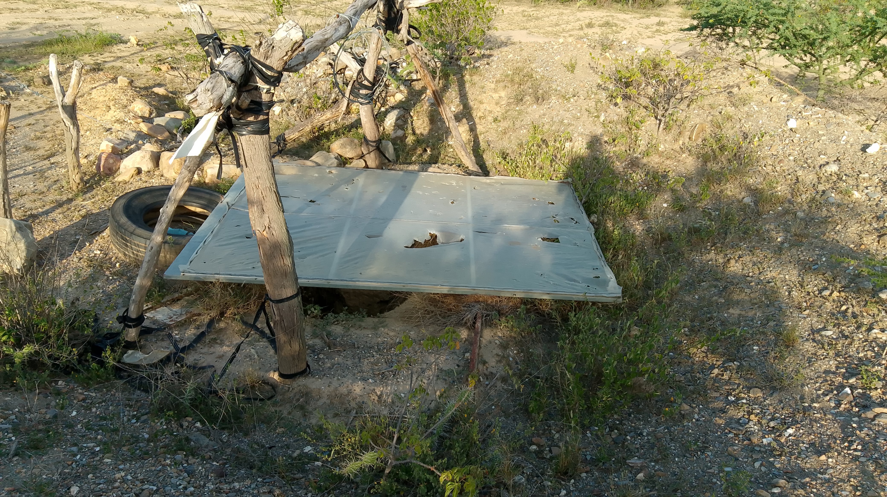
Marco de acero, cubierta protectora y acometida eléctrica a pie de pozo. GPS: 9°53'15.79"N, 69°35'37.25"W.
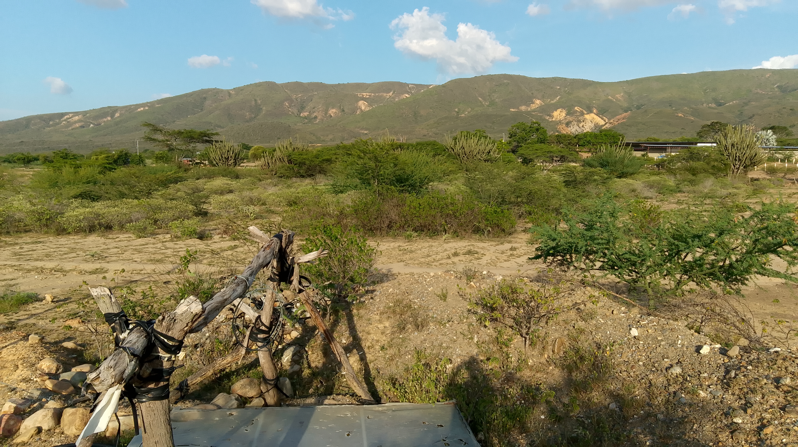
Arcillas densas sin colapso. Peldaños labrados intactos tras años de excavación.
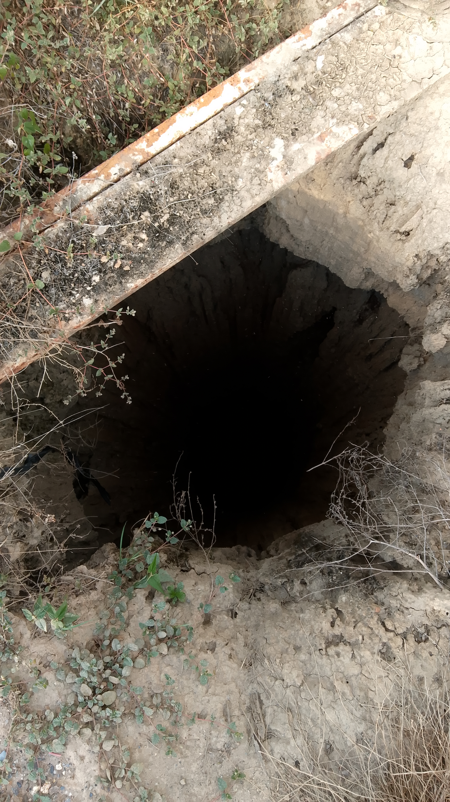
Destello solar sobre el manto de agua. Rezumo continuo en estrato de lidita y cuarzo.
Inspección del predio, camino afirmado y poste de tendido eléctrico contiguo.
Grabación cenital que demuestra la perfecta verticalidad y solidez de las paredes.
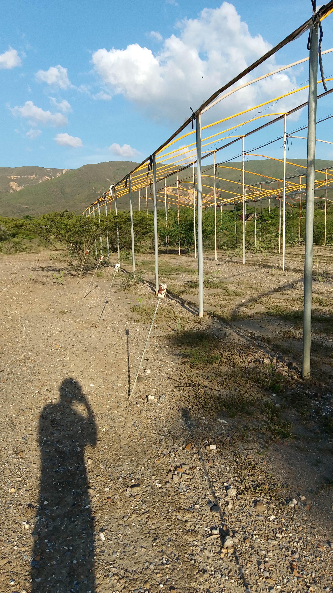
Cota 734 msnm. Tierras de altísima fertilidad agrícola con clima ideal de radiación.
La pregunta que todo inversor se hace. La respuesta está en la geología cuaternaria del Valle de Quíbor, documentada por el IGVSB, MARN y estudios de la UCLA (Barquisimeto).
Gravas, arenas y limos de abanicos aluviales. Depósito reciente (Pleistoceno tardío–Holoceno) de los piedemonte de la Sierra de Portuguesa. Alta permeabilidad pero sin acuífero sostenido — el agua de lluvia se infiltra y migra hacia estratos más profundos.
Arcillas compactas consolidadas de muy baja permeabilidad (<10⁻⁸ m/s). Actúan como sello confinante: retienen la presión del acuífero inferior y bloquean la evaporación hacia la superficie. Esta capa garantiza la calidad del agua en profundidad.
Grava fina negra de lidita volcánica lavada. Zona de ingreso de agua donde el acuífero presurizado penetra desde la formación calcáreo-cuarzosa. Nivel estático actual: 49.5 m (observado directamente con lámpara).
Roca fracturada de cuarzo cristalino y lidita (SiO₂ compacto). Acuífero fisurado artesiano de recarga profunda proveniente de la Sierra de Portuguesa (1.200–1.800 msnm). Transmisividad estimada T ≈ 15–35 m²/día. Columna de agua actual: 10.5 m (60m – 49.5m).
Recarga por lluvia orográfica (800–1.200 mm/año en cotas altas)
Presión artesiana acumulada bajo la arcilla
Nivel estático 49.5 m | Columna activa 10.5 m
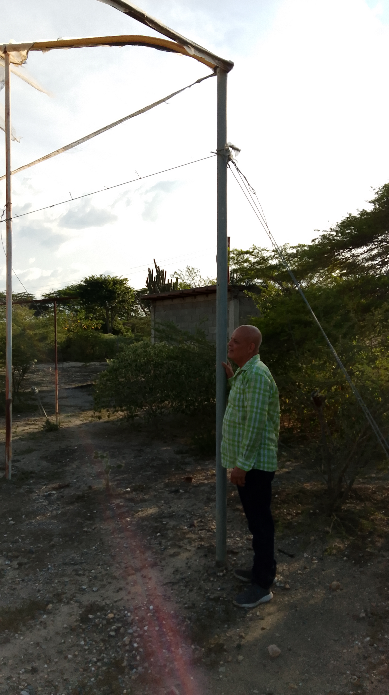
Camino afirmado de acceso al predio (Cota ~700 msnm)
Vegetación arbustiva del semiárido BSh y zona de cultivos vecinos
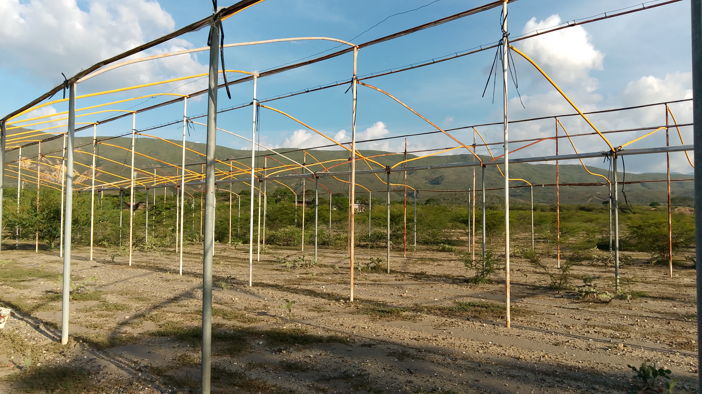
Superficie plana ideal para instalación de casa de malla
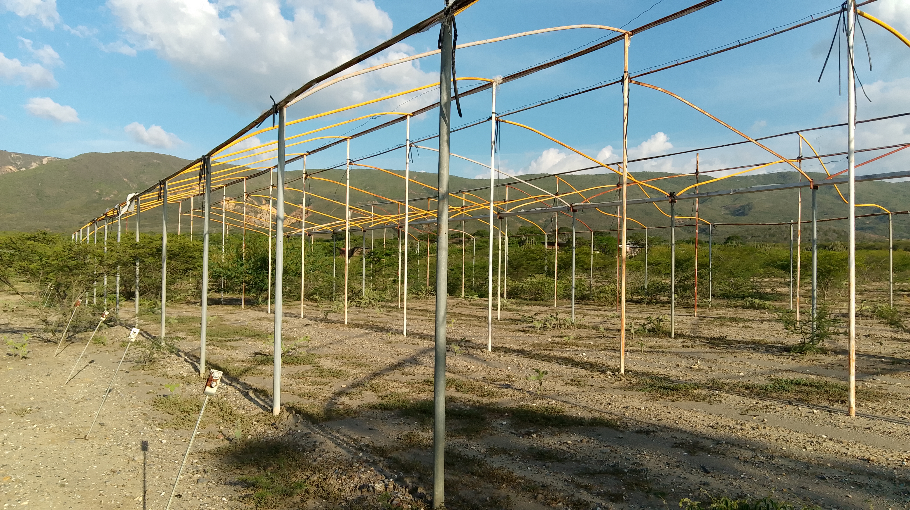
Poste de tendido eléctrico a pie de finca (sin costo de extensión)
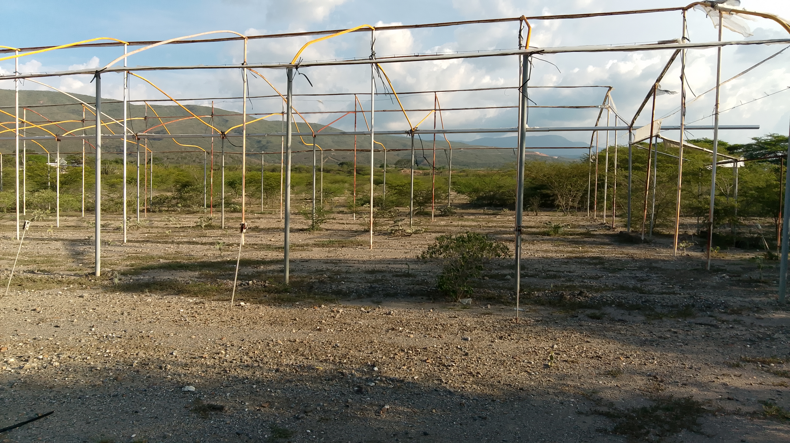
Marco de angular y tapa protectora con candado de seguridad
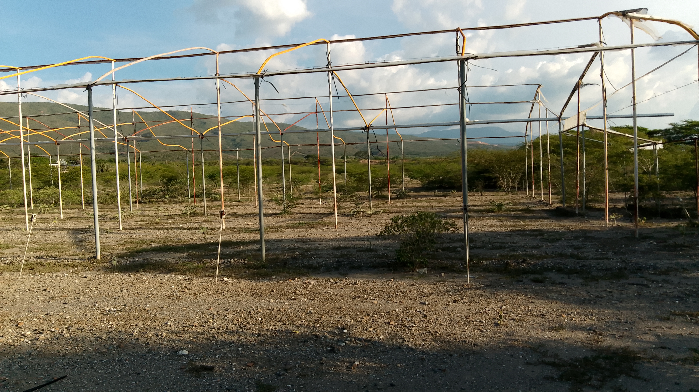
Diámetro variable de excavación. Se encofra a 60 cm con anillos.
GPS verificado: 9°53'15.79"N, 69°35'37.25"W
Sin colapso tras años de excavación — arcilla compacta consolidada
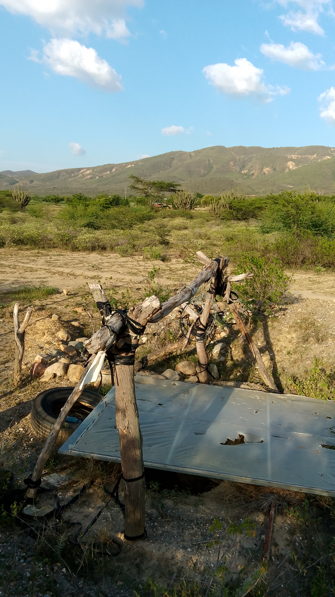
Peldaños de acceso labrados intactos en la arcilla
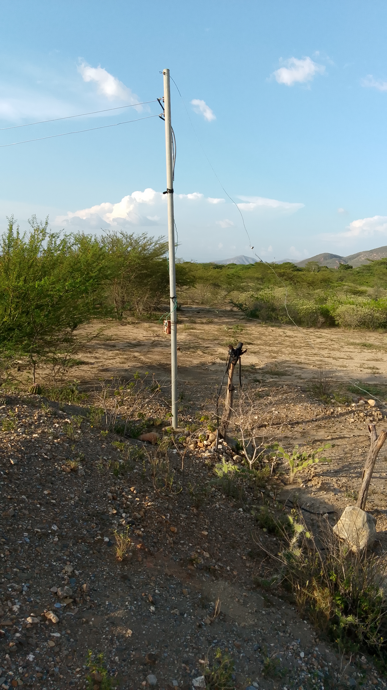
Cambio de color de la arcilla gris claro → arcilla oscura compacta
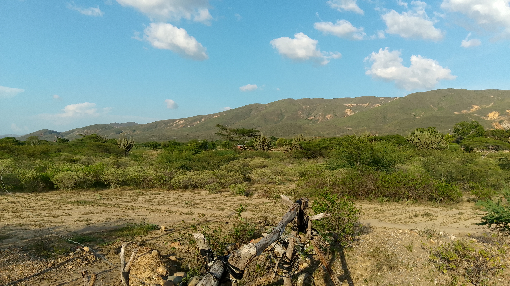
Destello del manto freático iluminado por linterna frontal
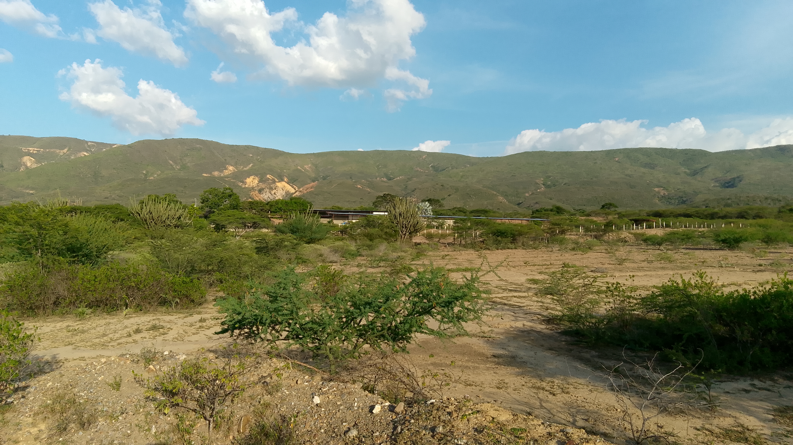
Estrato de transición: rezumo activo visible en paredes
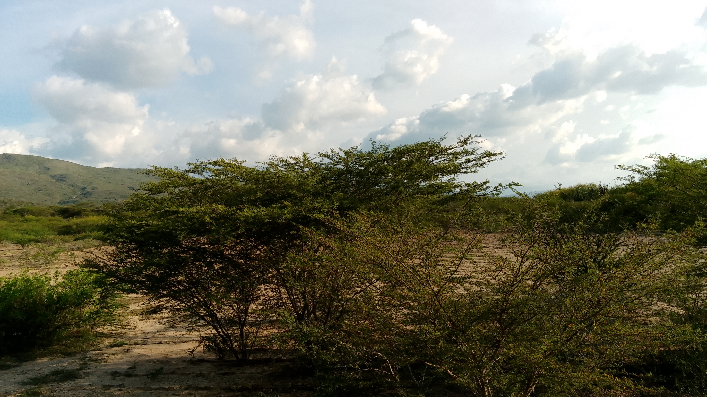
Agua de cuarzo-lidita: baja turbidez y conductividad moderada
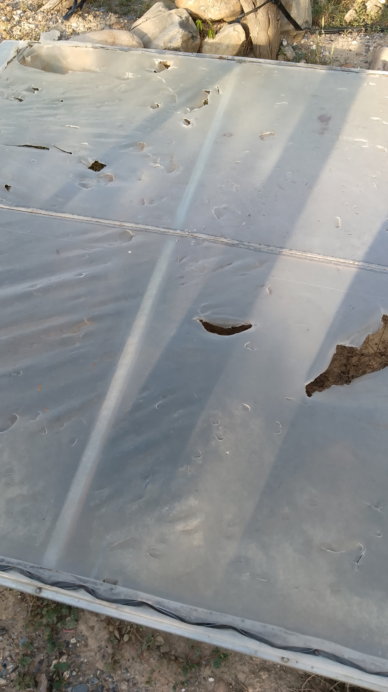
Sin riesgo de contaminación superficial — zona agrícola limpia
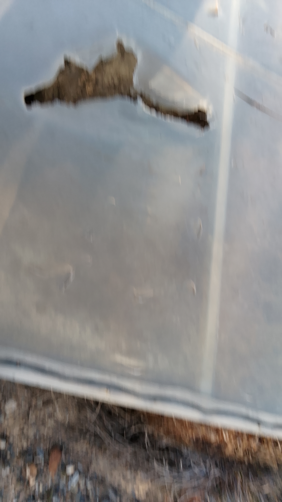
Sin taladro mecánico: pico, pala y barreta. Cero daño al acuífero.
Agua en roca SiO₂ fracturada: excelente calidad para riego
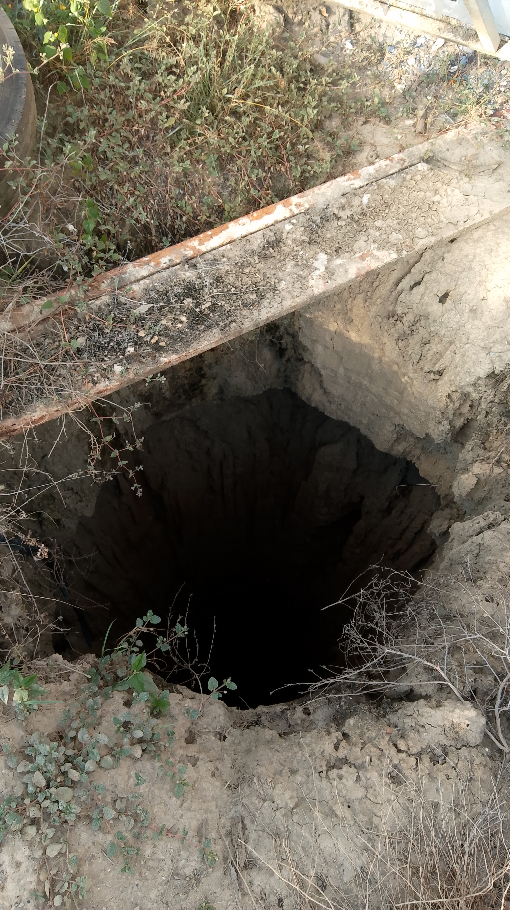
Con bomba de 1.5 HP: abastece 1.000 m² durante 12+ horas diarias
Recorrido completo alrededor del brocal, estructura de cubierta, entorno de terreno y acometida eléctrica disponible.
Verticalidad perfecta de las paredes autoportantes. Se observan los peldaños labrados y la transición de estratos geológicos.
Panorámica del sector Cuara: camino afirmado, tierras de cultivo vecinas y presencia de tendido eléctrico contiguo a la finca.
Accede a nuestra Suite Agronómica interactiva: cálculo bioclimático de Hellmann, balance de extractores eólicos, visor 3D CAD del invernadero, cálculo hídrico FAO-56 y matriz fitosanitaria IRAC/FRAC.